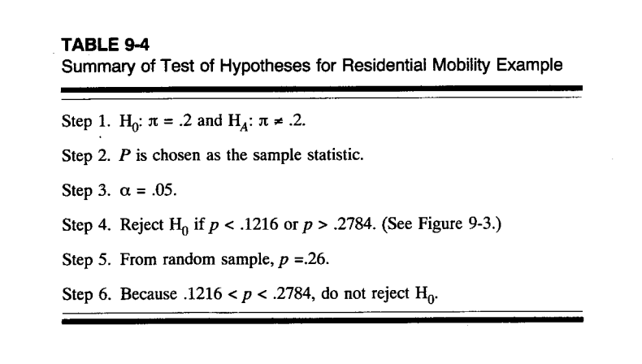
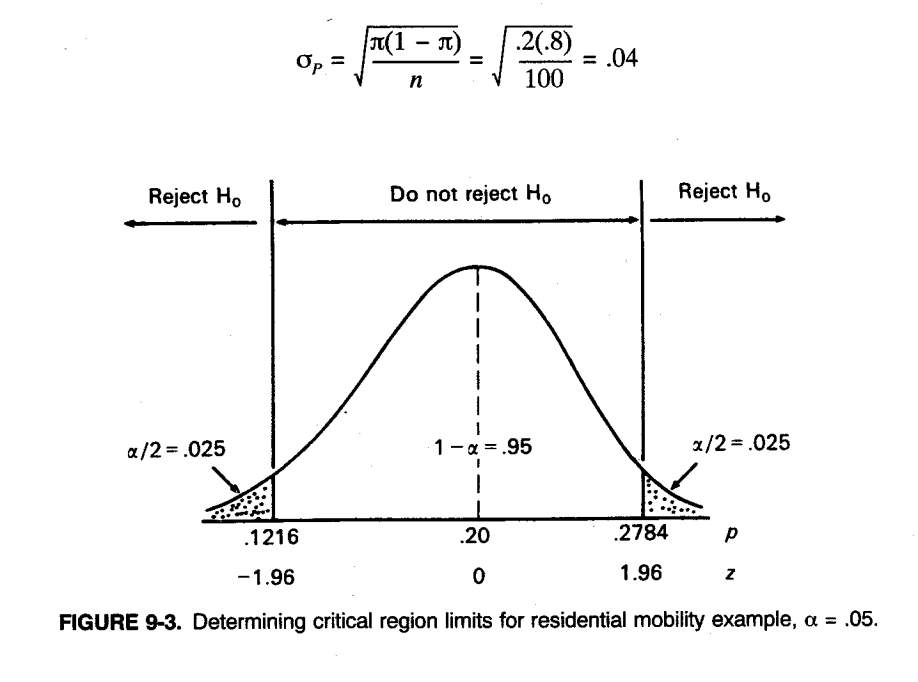
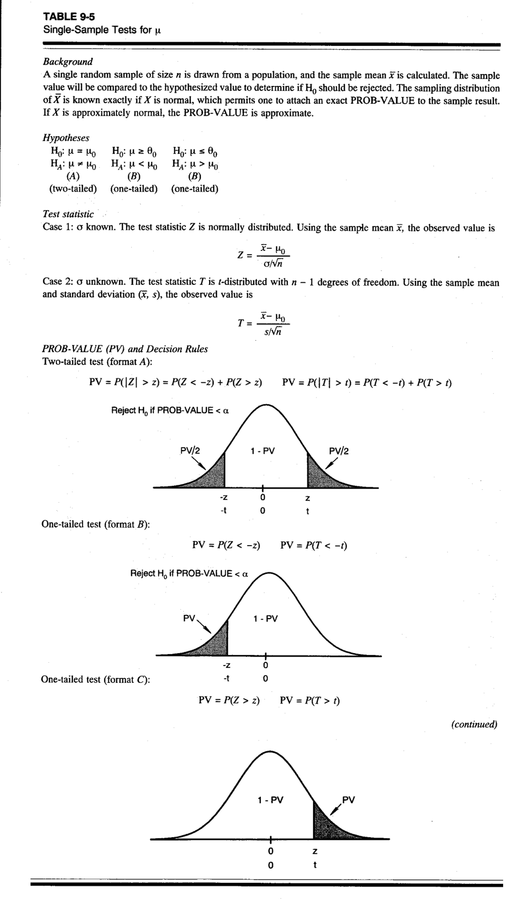
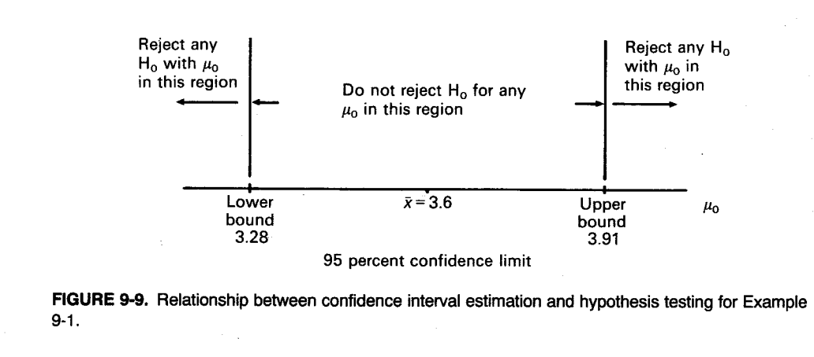
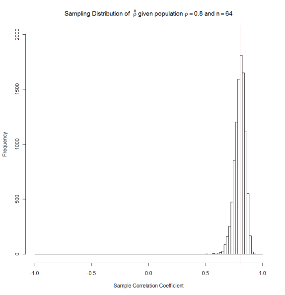

The concepts of randomness of a sample and the sampling distribution provide the link between a sample statistic and the underlying parameter of its parent population.
The sample gives us a glance at the otherwise invisible and unknown parent population.
Inferential statistics allows us to assess the likelihood whether a sample statistic deviates
[a] due to random sampling chance from an assumed value of a hypothetical reference population parameter, or
[b] more due to some substantial differences from the assumed value of the hypothetical reference population parameter.
1.2 Conceptional Components of Statistical Hypothesis Testing
The flow chart below displays the general components of hypothesis testing. Each block starts with a particular, perhaps hypothetical, underlying population:
We assume a hypothetical reference distribution for the unknown underlying parent population, i.e., given the null hypothesis would be true the hypothetical reference distribution is equal to the parent distribution.
We would like to make a statement about a parameter of the unknown parent population based on the drawn sample.
A set of hypothetical populations assume a set of possible population parameters and allow us to make what-if statements.
Conceptional components of statistical hypothesis testing
1.3 Steps of Hypothesis Testing
We develop the sampling distribution of the test statistics assuming the sample was drawn from the hypothetical reference distribution.
We draw a sample from the unknown parent population and calculate its associate test statistic.
We evaluate how likely this test statistic comes from the assumed reference distribution.
\(\Rightarrow\) Extreme test statistics (in either tail of the hypothetical reference distribution) are less likely to have been drawn from the hypothetical reference distribution. Thus they lead with error probability \(\alpha\) to a rejection of the null hypothesis \(H_0\).
1.3.1 Example: Alpha and Beta Error
α and β Error Animation
Example: The blue sampling distribution assumes the \(H_0: \mu \leq 74.6\) is true. A test statistic beyond the critical value is less likely to have been drawn for this hypothetical reference population.
If the true parent population has an expectation of \(\mu_{H_1} = 77.0\) then the distribution of the test statistic would be the one shown in red. (try the Shiny script HypothesesApp.R on your computer)
Only the \(\alpha\)-error can be controlled because it depends on the hypothetical reference distribution.
However, the \(\beta\)-error cannot be controlled because it depends on the status of an unknown population distributions, which is unknown to us.
1.4 General Decision Errors
Possible outcomes of the decision-making process about the true state of the parent population, given the observed sample is drawn from it, are:
Decision
\(H_0\) is true (unknown)
\(H_0\) is false (unknown)
Reject \(H_0\) (based on sample)
Type I error: Small error with probability \(\alpha\) assumes that the hypothetical reference distribution is true but we got an extreme sample. This leads to a rejection.
Correct Decision: With probability \(1 - \beta\) depending on the state of the unknown parent population. This is also known as the Power at a given effect size \(|\mu_{H_0} - \mu_{H_1}|\).
Fail to reject \(H_0\) (based on sample)
Correct Decision: Tentatively \(H_0\) cannot be rejected. However, there is always the possibility that \(H_1\) is true, and we do not reject \(H_0\) due to sampling variation.
Type II error: Probability \(\beta\) depending on a given state \(\mu_{H_1}\) of the unknown population, the sample statistic falls into in non-rejection region due to sampling variation from the parent population.
2 Statistical Inference: One Population Hypothesis Testing
2.1 General Steps of Classical Hypothesis Testing
The steps are:
Formulation of the null and the alternative hypotheses and other assumptions.
Specification of the test statistic and its statistical distribution under the assumed reference distribution.
Selection of a level of significance (willingness to reject the null hypothesis even though it is correct due to having obtained an extreme sample).
Construction of a decision rule (i.e., critical values).
Collection of a sample and computation of the value of the test statistic.
Deciding in favor or against the null hypothesis based on the value of the test statistic.
3 Formulation of the Hypotheses
3.1 Two-sided Test
Two-sided test for the point value of the hypothetical reference parameter\(\theta_0\):
(two-sided because the true parameter can be left or right from \(\theta_0\))
This implies that we have two critical values, one on the left and one on the right of the sample distribution of the test statistic under the null hypothesis.
In one-sided testing the null hypothesis is very specific by choosing a particular direction of deviation from the null hypothesis in favor of an alternative hypothesis.
The choice of the one- or two-sided specification depends on the problem under investigation. A one-sided hypothesis assumes that the analyst is more knowledgeable about the underlying populations.
In a one-sided test the critical value moves closer towards the center of the test-statistics’ distribution because all the error probability \(\alpha\) is concentrated in one tail: Therefore, if the direction of the alternative hypothesis has been assumed properly, the null hypothesis will more likely be rejected.
Place the issue that you aim to confirm into the alternative hypothesis, because we only can control the \(\alpha\)-error:
I.e., rejection of the null hypothesis leads to acceptance of alternative hypothesis with a small error probability.
The probability \(\alpha\) of erroneously rejecting the null hypothesis should be small.
The alternative hypothesis is usually less specific (broad range of possible parameters).
As a rule of thumb, choose the largest possible\(\alpha\)-error that you can live with.
When \(H_0\) is not rejected we need to say “we fail to reject \(H_0\) at the error level \(\alpha\)” rather than saying “we accept \(H_0\) at the error level \(\alpha\)” because there is always the possibility of committing a \(\beta\) error (i.e., \(H_0\) is false but the observed sample is extreme with regards to the unknown parent population, which leads to a failure of rejecting \(H_0\)).
Remember:
[a] under the assumption that the null hypothesis is correct, then the variability of the test statistic only comes from sampling error,
[b] if the alternative hypothesis is correct, then the deviation of test statistic stems from [i] a true difference to the expected value (the effect) from the value under the null hypothesis plus [ii] a general sampling error.
4 Example: Hypothesis Testing for the Population Proportion
4.1 [a] Selection of a Sample Statistic and Its Sampling Distribution
Based on the point estimator, e.g., \(P = \frac{1}{n} \cdot \sum_{i=1}^{n} X_i\) and its variances, we can design a test statistics. Note that the variance must be evaluated assuming that null hypothesis correct, that is \(H_0: \pi = \pi_0\).
Thus, the standard error for a binomial test scenario becomes:
We also can approximate the distributions under the null hypothesis of this test statistic for a sufficiently large sample size \(n > 100\) by the normal distribution and \(\pi_0\) is not to close at either end of its feasible range \([0,1]\):
\[z(P) = \frac{P - \pi_0}{\sigma_P} \sim N(0,1)\]
4.1.1 Excursion: Exact Binomial Test
Binomial Distribution
For smaller sample sizes or extreme hypothetical parameters \(\pi_0\) (leading to a skewed distribution of the test statistic) the exact binomial distribution should be used.
However, one most likely will not be able to work with the exact Type I error probability \(\alpha\), due to the discrete nature of the binomial distribution. See: ExactBinomialTest.Rmd
Notes:
Rather than using the distribution of the rate estimator \(\hat{\pi} = \frac{X}{n}\), the hypothetical distribution \(X \sim Binomial(\pi_0 = 0.2, n = 100)\) of the equivalent count estimator\(X = \sum_{i=1}^{n} X_i\) (number of successes) is used because it is binomial distributed.
The expected value under the null hypothesis is \(E(X) = n \cdot \pi_0 = 20\)
The critical values are \(X_{lower} = 12\) and \(X_{upper} = 28\) with their associated error probabilities \(\alpha_{lower} = 0.02522\) and \(\alpha_{upper} = 0.02002\), respectively.
Note: Because the distribution is discrete the total error probability of \(\alpha = 0.05\) cannot be exhausted.
4.2 [b] Selection of the Level of Significance
Select the significance level \(\alpha\) according to the amount of risk you are willing to take to reject the correct null hypothesis by making an erroneous decision due to sampling variations.
4.3 [c] Construct the Decision Rule
Split the parameter space of \(\pi\) in dependence of the significance level into an area in accordance with the null hypothesis and tail areas (two-sided tests) or one tail area (one-sided test) indicating the alternative hypothesis is more valid because of a wrongly assumed null hypothesis.
FIGURE 9-2. Sampling distribution of P, centered on hypothesized value π = .2.
The selection of the acceptance and rejection areas depends on the specification of the null hypothesis as one- or two-sided.
Def. Critical region and critical values: The critical region corresponds to those values of the test statistics, for which the null hypothesis is rejected at a given error probability \(\alpha\). The limit(s) of the critical region are (is) the critical values.
The two-sided null and the alternative hypotheses can be translated into:
\(H_0: T \in ]A_1, A_2[\) under the null hypothesis, and
\(H_1: T \leq A_1 \cup T \geq A_2\) under the alternative hypothesis: (these are the critical regions for a two-sided test)
4.4 [d] Example: Residential Mobility

TABLE 9-4. Summary of Test of Hypotheses for Residential Mobility Example

FIGURE 9-3. Determining critical region limits for residential mobility example, α = .05.
Assume that the observed value of for the sample proportion is \(P = 0.26\)
5 Testing for Population Expectations

TABLE 9-5. Single-Sample Tests for μ
Background: A single random sample of size \(n\) is drawn from a population, and the sample mean \(\bar{x}\) is calculated. The sample value will be compared to the hypothesized value to determine if \(H_0\) should be rejected. The sampling distribution of \(\bar{X}\) is known exactly if \(X\) is normal, which permits one to attach an exact PROB-VALUE to the sample result. If \(X\) is approximately normal, the PROB-VALUE is approximate.
Hypotheses:
Two-tailed (A)
One-tailed (B)
One-tailed (C)
\(H_0: \mu = \mu_0\)
\(H_0: \mu \geq \theta_0\)
\(H_0: \mu \leq \theta_0\)
\(H_A: \mu \neq \mu_0\)
\(H_A: \mu < \mu_0\)
\(H_A: \mu > \mu_0\)
Test statistic:
Case 1:\(\sigma\) known. The test statistic \(Z\) is normally distributed. Using the sample mean \(\bar{x}\), the observed value is:
\[Z = \frac{\bar{x} - \mu_0}{\sigma/\sqrt{n}}\]
Case 2:\(\sigma\) unknown. The test statistic \(T\) is \(t\)-distributed with \(n - 1\) degrees of freedom. Using the sample mean and standard deviation \((\bar{x}, s)\), the observed value is:
Since the denominator \(s_X/\sqrt{n}\) is on average smaller the \(t\)-statistic is usually inflated.
\(\Rightarrow\) Inflation will cause a more frequent rejection than we would expect under an \(\alpha\)-error.
6.1 The t-Distribution
Figure 12.5. \(t\) distribution for 1, 30, and \(\infty\) degrees of freedom
The symmetric \(t\)-distribution corrects this inflation of the \(t\)-statistic by being heavier in its tails.
The \(t\)-distribution in dependence of the sample size through the degrees of freedom \(df = n - 1\) is shown above.
One degree of freedom is lost because after the mean has been estimated only \(n - 1\) sample observation can vary freely.
The test logic remains the same as for the \(z\)-values.
Just the \(t\)-distribution is used to calculate the critical values and evaluate the \(t\)-statistic:
\(t_{\alpha/2, df}^{critical}\) and \(t_{1-\alpha/2, df}^{critical}\) for the two-sided hypothesis,
and \(t_{\alpha, df}^{critical}\) or \(t_{1-\alpha, df}^{critical}\) for one-sided hypotheses testing, respectively.
As the sample size increases, the sampling distribution of the variance will become more symmetric, thus there will be an equal number of estimated variances below and above the expected value.
Consequently, sample sizes larger than \(n > 30\) the \(t\)-distribution can be approximated by the standard normal distribution.
7 Relationship between Hypothesis Testing and Confidence Intervals

FIGURE 9-9. Relationship between confidence interval estimation and hypothesis testing for Example 9-1.
The confidence interval at a given probability \(1 - \alpha\) complements the classical hypothesis testing approach for two-sided hypotheses testing.
The confidence interval is constructed using the observed value of the test statistic, which is based on the unknown parent distribution.
If the hypothetical value \(\theta_0\) under the null hypothesis falls within the confidence interval, then we are not able to reject the null hypothesis.
8 Problems of Significance Tests
8.1 Practical Relevance
A statistically significant result does not mean that it is relevant for practical purposes. Vice versa, a small but insignificant difference may be practically relevant.
Statistical significance is based on the distribution of the test statistic under the null hypothesis, whereas practical significance is based on the absolute difference of the test statistic from the value assumed under the null hypothesis.
This difference needs to be larger than a given threshold value to induce action.
Example: a homeowner has a mortgage at 5.5% interest on his/her home. Another lender offers an interest rate of 5.0% to refinance the mortgage. Will the homeowner take this offer because he/she saves substantial money after refinancing expenses?
8.2 Deductive Reasoning
A sample must always be drawn after we have formalized the hypotheses.
This leads to problems for prior exploratory data analyses, which may bias the process of hypothesis formulation.
The hypothesis would become dependent on a sample, if we use the same sample to formulate the hypothesis and therefore, predetermine the outcome.
8.3 Large Sample Problem
As the sample size \(n\) becomes excessively large, virtually non-existing differences (i.e., effect sizes) of the test statistic from the hypothetical parameter become statistically significant because the standard error of the test statistics shrinks toward zero (remember the central limit theorem).
8.4 Multiple Testing
The error probability increases if we perform multiple tests on the same dataset:
Assume we perform two independent tests on the same data, the probability of not rejecting [NR] both null hypotheses correctly becomes:
Consequently, the error probability \(\alpha_{new}\) for each individual test must be set to something smaller, e.g., Bonferroni adjustment:
\[\alpha_{new} = \frac{\alpha}{K}\]
where \(K\) is the number of tests performed on the same data set.
9 Significance Test for the Correlation Coefficient
9.1 Test Under the Null Hypothesis of Independence (see BBR p486-487)
Assumption: The bivariate reference population consists of two uncorrelated variables.
This leads to the null hypothesis \(H_0: \rho_0 = 0.0\) and the alternative hypothesis \(H_1: \rho_0 \neq 0.0\).
Assuming a correlation of zero under the null hypothesis is sensible because it is least specific and neutral with regards to a potential dependency between two variables.
The population correlation parameter is denoted by \(\rho\) whereas the sample statistic is denoted by \(r\).
If we can assume that both variables \(X_1\) and \(X_2\) are approximately jointly normal distributed and uncorrelated, then we do not need to evaluate the sampling distribution with a simulation experiment. Its distribution is known:
The sample correlation coefficient \(r\) follows under the null hypothesis\(H_0: \rho = 0\) a t-distribution with \(df = n - 2\) degrees of freedom where \(n\) is the number of observations.
It has an expected value of \(E(r) = 0\) and a standard error of \(\sqrt{Var(r)} = \sqrt{\frac{1 - r^2}{n - 2}}\), that is:
Extreme values \(t\) indicate that the pairs of sample observations are most likely not originating from an uncorrelated bivariate parent population.
For a sample sizes of more than \(n > 30\) observation pairs the \(t\)-distribution can be approximated by the standard normal distribution.
10 Distribution of \(\rho\) under Alternative Hypotheses
Under the assumption that \(\rho_0 \neq 0.0\) both variables are correlated, and the true population correlation coefficient will move:
to either \(\rho \to +1\) for positive correlation
and \(\rho \to -1\) for negative correlation.
Now the distribution can no longer be symmetric because it is bound asymmetrically:
Sampling Distribution of \(\hat{\rho}\) given population \(\rho = -0.5\) and \(n = 64\)

Sampling Distribution of \(\hat{\rho}\) given population \(\rho = 0.8\) and \(n = 64\)
Clearly, neither a normal approximation nor the \(t\)-distribution can be used to evaluate the significance of an observed correlation coefficient of the critical values.
10.1 Fisher z-Transformation
However, the so-called Fisher z-transformation can be used to transform the correlation coefficient \(r\) to be approximately normal distributed:
Fisher z-transformed Distribution of \(\hat{\rho}\) given population \(\rho = 0.8\) and \(n = 64\)
11 R Code Examples
11.1 One-Sample t-Test
# Example: Testing if population mean equals a hypothesized valueset.seed(123)sample_data <-rnorm(25, mean =52, sd =10)# Hypotheses: H0: mu = 50 vs H1: mu != 50mu_0 <-50# Perform t-testt_result <-t.test(sample_data, mu = mu_0)print(t_result)
One Sample t-test
data: sample_data
t = 0.88024, df = 24, p-value = 0.3875
alternative hypothesis: true mean is not equal to 50
95 percent confidence interval:
47.75878 55.57462
sample estimates:
mean of x
51.6667
# Example: Testing population proportion# H0: pi = 0.20 vs H1: pi != 0.20successes <-26n <-100pi_0 <-0.20# Using prop.test (with continuity correction)prop_result <-prop.test(successes, n, p = pi_0)print(prop_result)
1-sample proportions test with continuity correction
data: successes out of n, null probability pi_0
X-squared = 1.8906, df = 1, p-value = 0.1691
alternative hypothesis: true p is not equal to 0.2
95 percent confidence interval:
0.1797427 0.3590222
sample estimates:
p
0.26
# Example: Testing correlation coefficientset.seed(456)n <-30x <-rnorm(n)y <-0.6* x +rnorm(n, sd =0.8) # Correlated with rho ~ 0.6# Test H0: rho = 0cor_result <-cor.test(x, y)print(cor_result)
Pearson's product-moment correlation
data: x and y
t = 4.1711, df = 28, p-value = 0.0002652
alternative hypothesis: true correlation is not equal to 0
95 percent confidence interval:
0.3330771 0.8007416
sample estimates:
cor
0.6190606
# Manual calculationr <-cor(x, y)t_stat_cor <- r *sqrt(n -2) /sqrt(1- r^2)df_cor <- n -2p_value_cor <-2*pt(-abs(t_stat_cor), df = df_cor)cat("\nManual Calculation:\n")